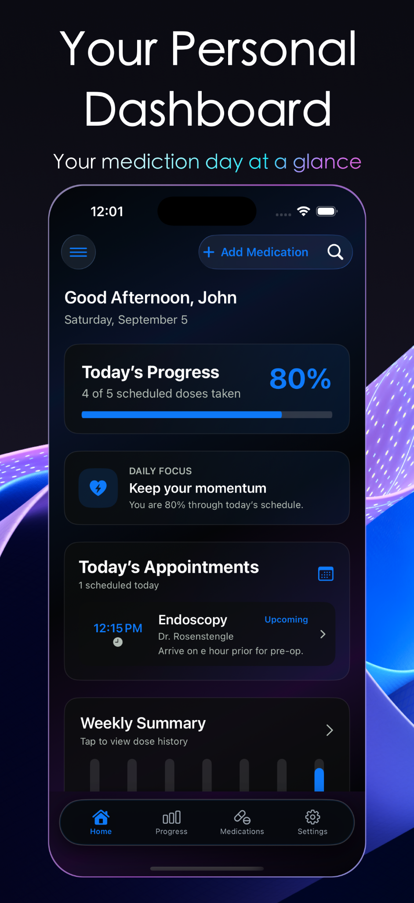

INNOVATE. BUILD. EMPOWER.
Thoughtful apps.
Everyday impact.
Simple, purposeful technology designed around real life.
EXPLORE OUR APPS SELECT AN APP TO EXPAND
Stay on track. Live healthier.
Manage medications, dose history, refills and care in one place.
Select the preview to explore MedTrak
View MedTrak details ↗Make progress feel effortless.
Bring projects, tasks and next steps into focus.
Select the preview to explore TaskForgeTF
See the right fit before you install.
Plan room layouts, viewing distances and display sizes.
Select the preview to explore TVsizeTV